1
Drop in your technical file
Drag a PDF onto Beacon, or click Try a sample file to see a review first. Beacon reads the file page by page, and changes appear as they are found.
Upload your medical-device technical documentation. Beacon marks it up with suggested changes, page by page. Each change is tied to the Great Britain rule behind it, and you decide what to keep.
Free trial by invitation · Windows 10 and 11 · Great Britain only
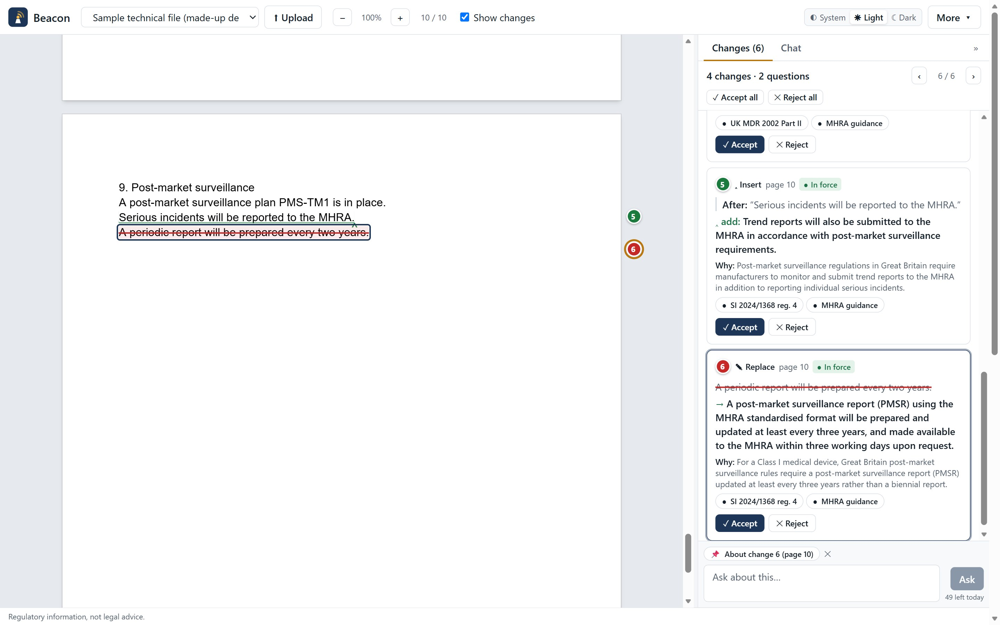
Screenshots show Beacon reviewing a made-up sample file. They are examples, not advice about any real device.
Beacon works like a PDF editor in review mode. There's nothing to learn: if you've used track changes, you already know how.
Drag a PDF onto Beacon, or click Try a sample file to see a review first. Beacon reads the file page by page, and changes appear as they are found.
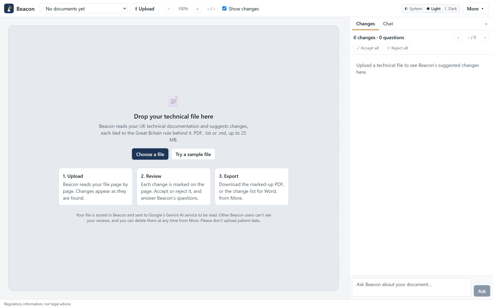
Words to replace are struck through, a caret ^ shows where to add something, and questions get a bubble in the margin. Every mark has a number.
Hover over a mark to read the suggestion and accept or reject it on the spot.
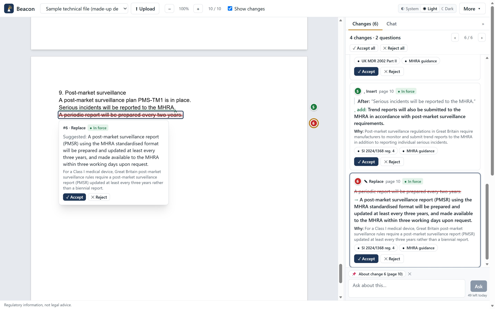
The Changes panel lists each suggestion with the current text, the new text, why, and a chip for the rule behind it. Step through with Previous and Next, or accept or reject them all.
Where the answer depends on facts only you know, Beacon asks a question instead of guessing.
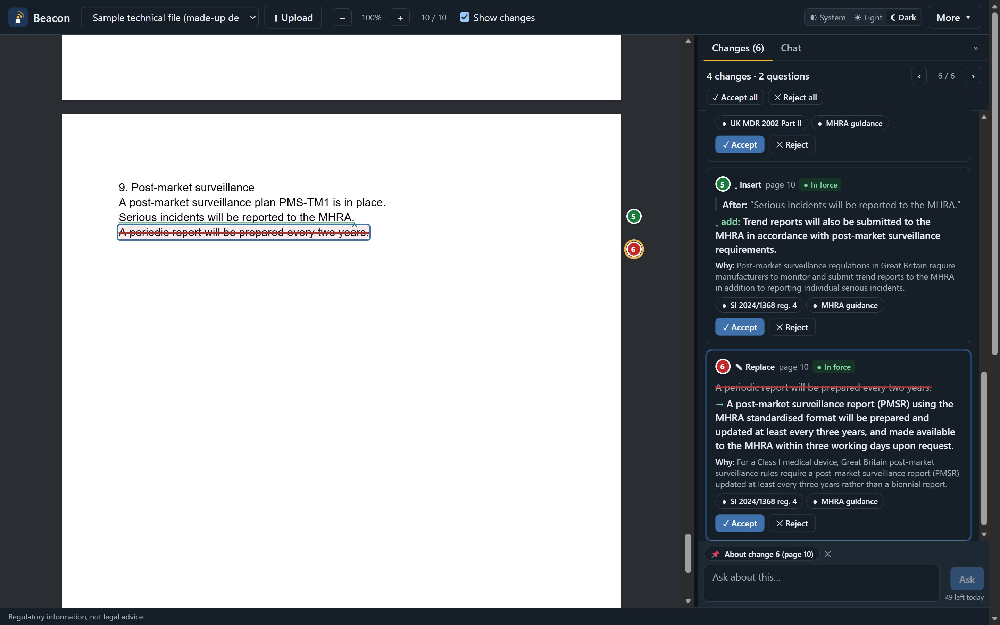
Ask Beacon a question in plain English. Answers cite the pages of your file and the regulations they rely on. Click a page chip and the passage lights up on the page.
Or select any text and choose Ask Beacon or Suggest a change.
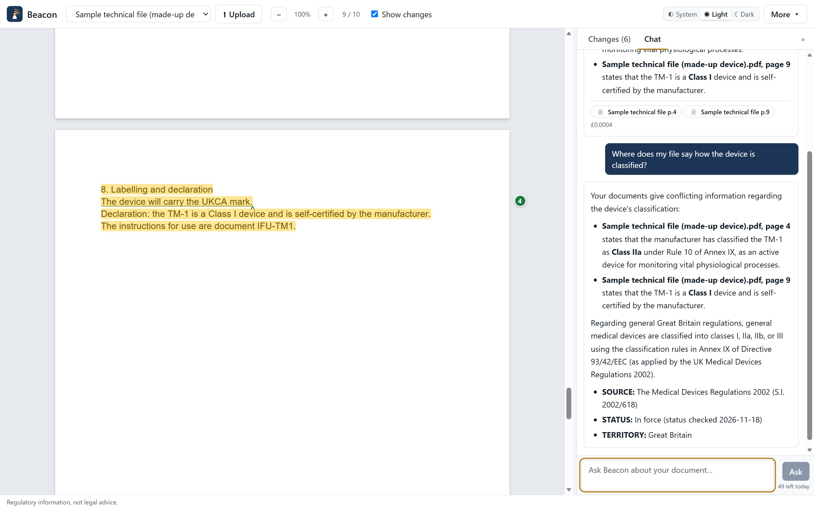
Export the PDF with Beacon's changes as standard comments that open in Acrobat, Edge or Preview, or the list of changes as a Word document.
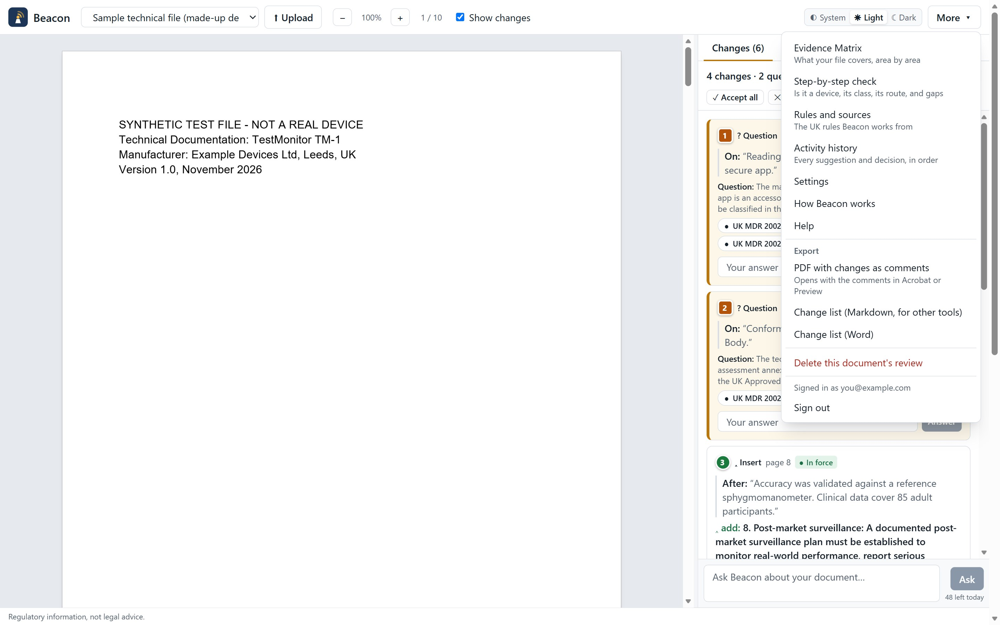
Every change names its source and provision, and says how settled the law behind it is. That's never shown by colour alone.
Where the rules don't settle it for your device, Beacon asks you, with the sources that bear on it.
If Beacon can't find the exact words on the page, it says "location not found" rather than marking the wrong place.
Every suggestion and decision is kept in an activity history that can't be altered, so you can show how each decision was reached.
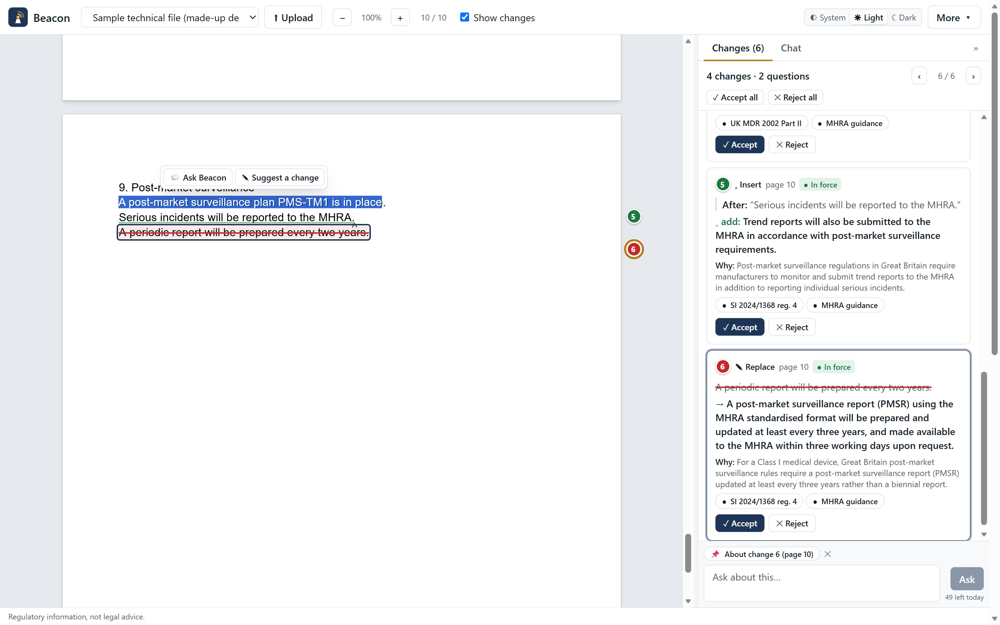
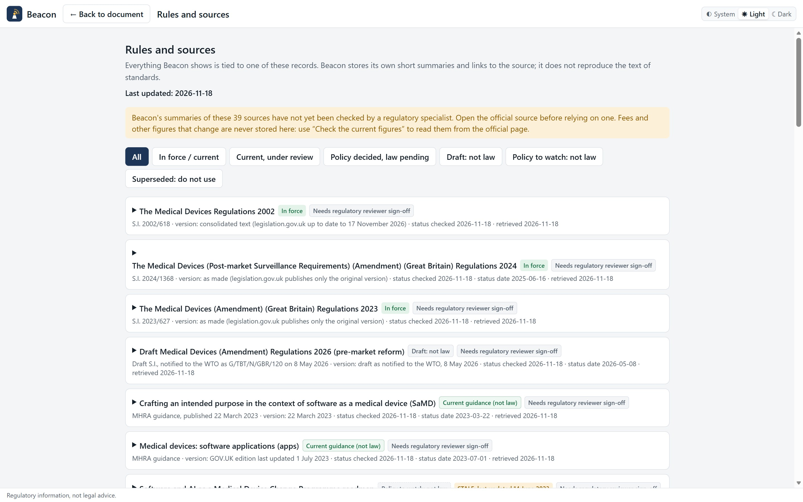
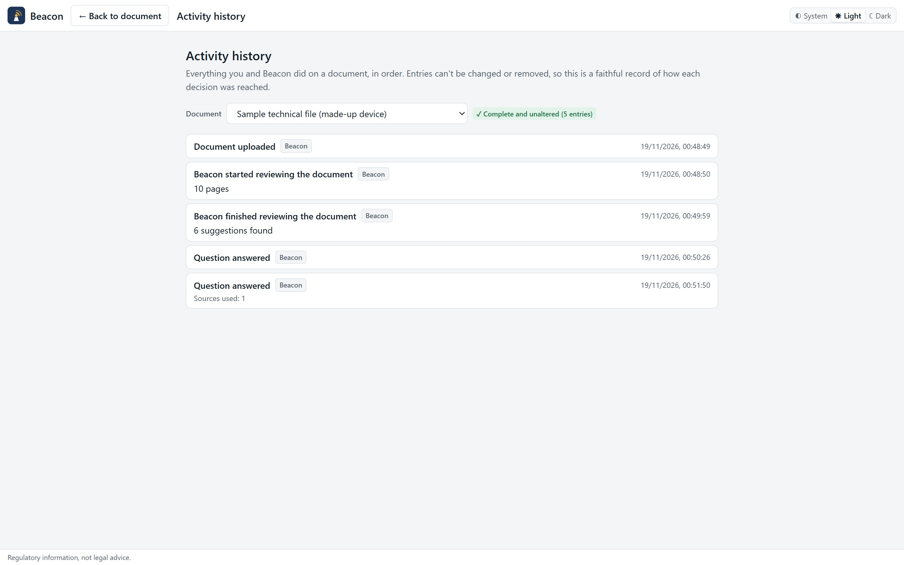
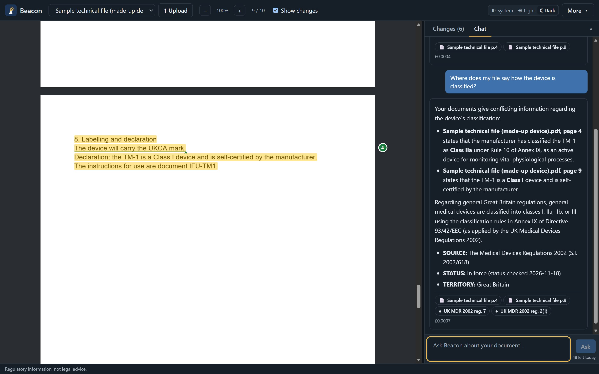
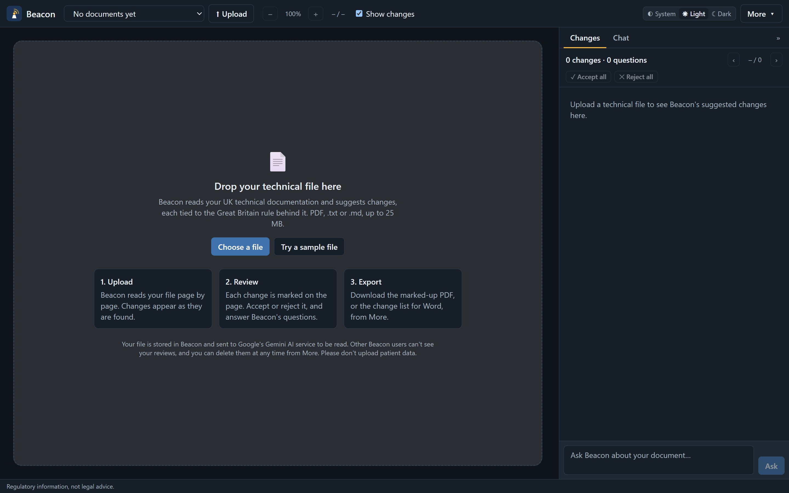
Beacon is in a free, invitation-only trial. You'll need an invitation to sign in.
⬇ Download Beacon for WindowsWindows 10 or 11 · All versions
Your documents are sent to Google's Gemini AI service to be read. Other users can't see them, and you can delete them at any time. Please don't upload patient data.
Beacon covers Great Britain only. Northern Ireland is flagged, not assessed.
Beacon gives regulatory information to help you see what needs reviewing. It is not legal, regulatory or clinical advice, it does not decide whether your device complies, and it does not make submissions for you.